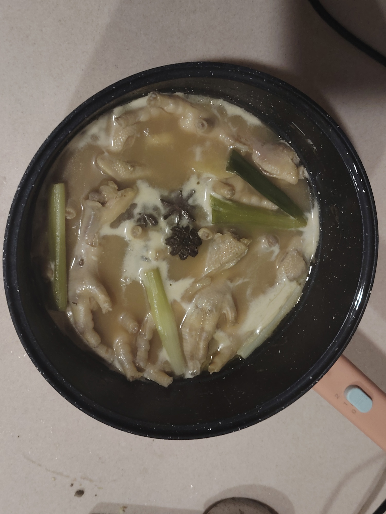

香辣鸡爪煲的做法
香辣鸡爪煲口感 Q 弹，香辣浓郁，回味无穷。
预估烹饪难度：★★★★
必备原料和工具
- 鸡爪
- 葱
- 姜
- 料酒
- 香叶
- 八角
- 生抽
- 老抽
- 蒜
- 小米椒
- 辣椒面（可选）
- 蚝油
- 五香粉
- 盐
- 鸡精
计算
- 一斤鸡爪
- 香叶 3 片
- 八角三个
- 小米椒 6 个
- 姜末 10g
- 蒜末 10g
- 小葱 2 根
- 蚝油 3g
操作
- 给鸡爪剪去指甲。如果买的鸡爪只有脚掌部分，对半切开即可。 如果是整只鸡爪，需要去骨。清水洗干净。
- 鸡爪冷水下锅，葱姜料酒焯水，水开，撇去浮沫。
- 加入香叶、八角、生抽、老抽，盖盖小火慢煮三十分钟。 
- 捞出鸡爪，留一碗鸡汤备用。
- 起锅烧油，用小火炒香姜末、蒜末、小米椒，能吃辣再放点辣椒面。加入生抽、老抽、蚝油、五香粉、盐，炒出酱香味。
- 放入鸡爪，放一点盐调味，翻炒一两分钟，再倒入鸡汤，边炒边搅动。
- 放入鸡精提鲜，撒入葱段搅拌均匀即可出锅。
注：如果需要加入配菜，请在放入鸡爪之前，底料炒香之后执行。
附加内容
如果您遵循本指南的制作流程而发现有问题或可以改进的流程，请提出 Issue 或 Pull request 。